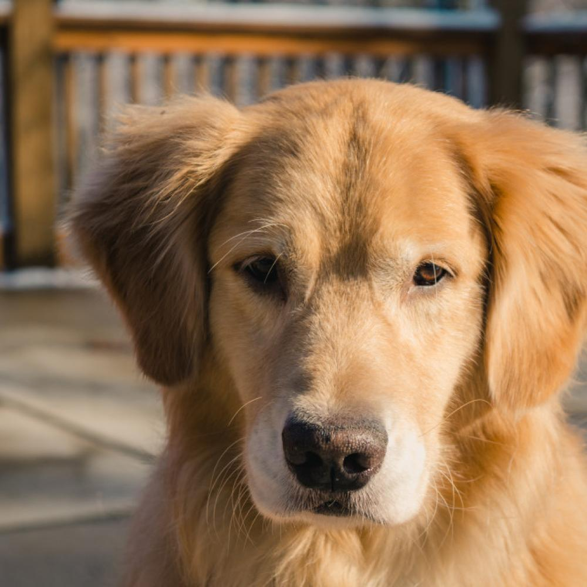
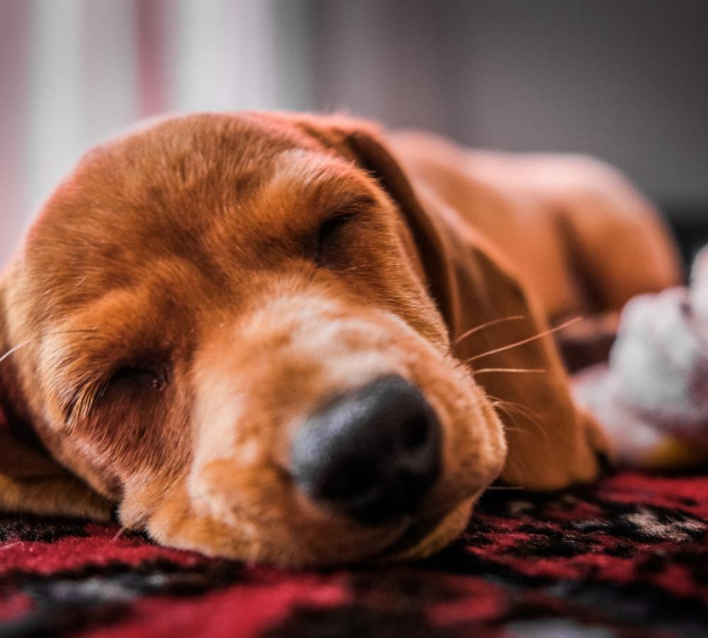
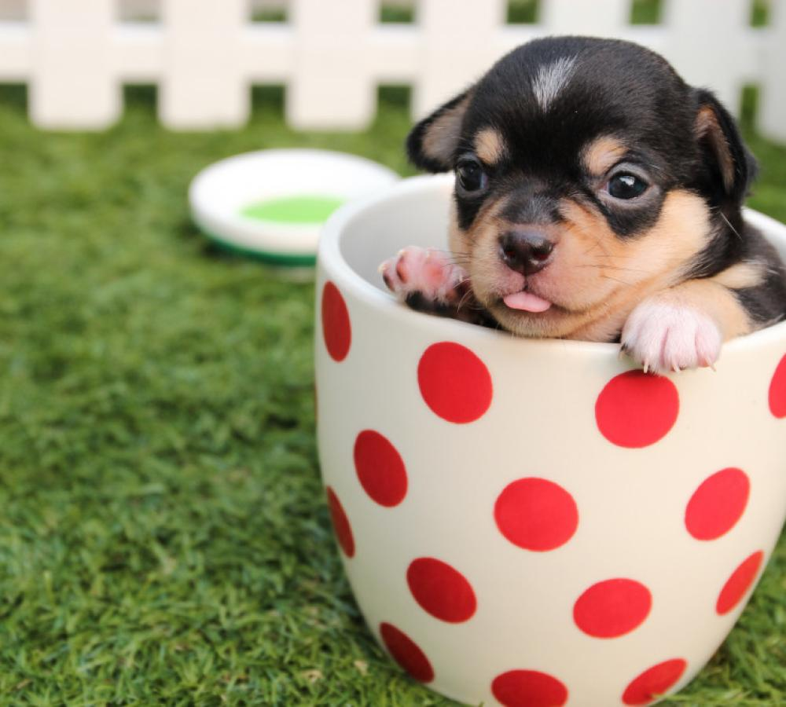
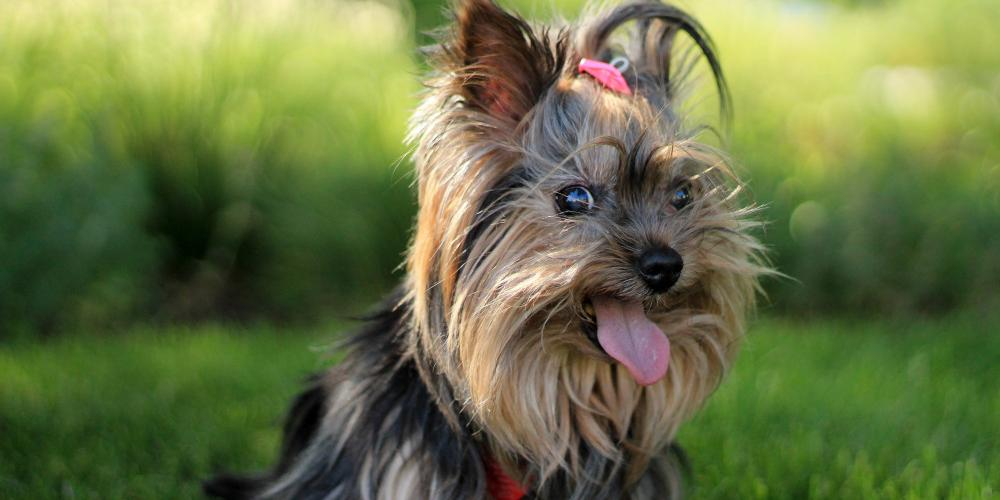

保護犬支援を、特別な行為ではなく、
“日常の選択”へ。
支援する・買う・見る・広める・参加する。
その一つひとつが、保護犬を支え続ける力になります。
閉じた保護所ではなく、地域・人・企業がつながる“ステーション”として。
何をすれば支援になるのか分かりにくい
寄付先が見えにくく、行き先が不透明
継続支援の仕組みが弱く、単発で終わる
企業や店舗が参加しづらい（高額協賛のみ）
わんステは、寄付・購入・視聴・企業参加の
すべてを“支援の導線”に変えていきます。

日々の飼養・医療・施設維持には、絶え間ない資金と人の手が必要です。わんステーションは、寄付だけに頼らず、商品・配信・企業連携といった複数の導線で、支援が地域に循環し続ける仕組みをつくります。
→お金の流れを見る保護から譲渡、医療、地域連携まで。ひとつの拠点に、保護犬を支える機能を集約します。
保護犬を拠点で迎え、触れ合いながら正式譲渡へ。社会化トレーニングや面談・手続きも拠点で完結します。
本部が保健所・愛護センターとの窓口を一元管理。各拠点が最寄りの「引き取りの受け皿」として機能します。
ドナー犬の登録・マッチングを本部が管理し、提携動物病院の輸血医療へ。法に沿った適切な主体で命をつなぎます。
社会化済みの保護犬とのお散歩や撮影。ペット不可住宅の方や、里親候補のお試し機会としても。
安全な触れ合いエリアと、衣装・背景を備えた撮影スタジオ。楽しさが、そのまま支援につながります。

撮影スタジオでの記念写真、ドッグランでのひととき、フリー触れ合いエリア。日常の小さな楽しみが、保護犬の暮らしを支えます。会員やドナー犬には、うれしい特典も。
→会員制度を見る集まった支援はすべてNPO法人が集約。使途を厳格に区分し、年次報告で公開します。
会員費・寄付・CF・物販・協賛・カフェ収益
NPOが一元管理し、使途を区分して全公開
飼育・医療・保健所連携・施設・啓発活動へ
保護犬が家族へ。支援が地域で循環する
支援者への約束 ── 年次活動報告で全公開 ／ 使途を厳格に区分 ／ 会員へ専用レポート
続けて支える人に、続けて応える。会員費は保護活動の安定した原資になります。
触れ合い・撮影・レンタルの割引や、会員限定の特典を。プレミアムは触れ合い・ドッグランが使い放題に。
献血で命を救う大型犬を「ヒーロー」として認定・表彰。健康管理はNPOがサポートします。

立ち上げの第一歩を、クラウドファンディングで進めています。あなたの応援が、救える命の数になります。